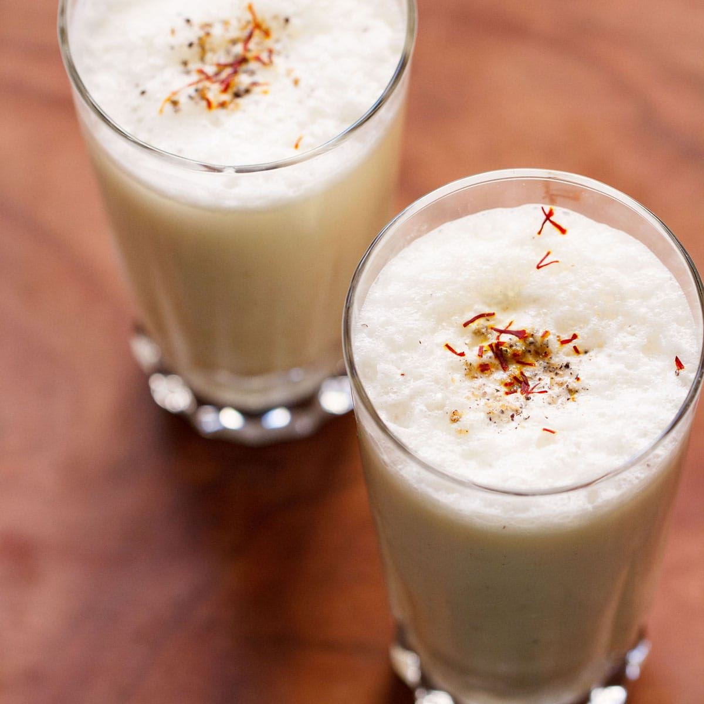

Sweet Lassi

Description:
Lassi is a blended yogurt drink that is very popular
in the Northern Parts of India. It is made with
blending curd or yogurt with water or milk, salt
or sugar and some spices or herbs.
There are many variations of a lassi recipe,
including mango lassi, dry fruits lassi, and
malai lassi. Here I am giving an easy, energizing
and flavorful lassi recipe variations with you.
Ingredients:
- Curd
- Sugar
- Cardamom
- Saffron
Steps:
- Take 2 cups of fresh homemade curd in a bowl.
- Blend the curd with wired whisk or immersion
blender untill it becomes smooth.
- Add 4 to 5 tablespoon of sugar and blend agian
untill sugar gets dissolved.
- Add 1 cup of cold water to it and mix it well.
- Add cardamom powder and some strands of saffron.
- Enjoy your lassi.